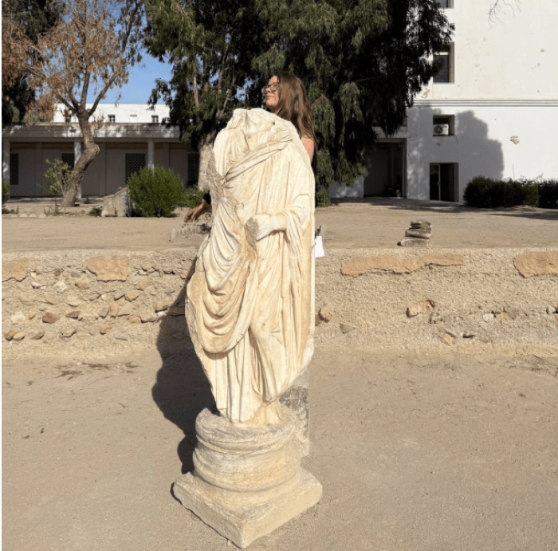

Caroline Nickerson leads Partnerships and Community at Tanit XR, where she helps shape collaborations with museums, universities, and cultural heritage institutions. She brings a rich background in civic engagement, public interest technology, and community-centered storytelling. Caroline is the Executive Director and co-founder of Florida Community Innovation, the nonprofit that serves as Tanit XR’s fiscal sponsor. Through this role, she supports young innovators who build social impact technology and develops programs that connect communities with trusted information and digital tools. Her leadership at FCI includes guiding partnerships, designing outreach initiatives, and supporting volunteer-led projects across Florida and beyond. Read about all of FCI’s projects in their handbook! Caroline is the communications lead at CitSci , a global citizen science platform based at Colorado State University where researchers can create and manage projects (everything from participant recruitment, to data sheets, to data analysis). She loves helping tell researcher and participant stories and working to broaden engagement in science. Caroline is all the director of communications and outreach at the Human Computation Institute, a nonprofit innovation center that collaborates with UC Davis, Cornell, and others for the betterment of society through novel methods leveraging the complementary strengths of networked humans and machines. Projects focus on diverse fields, including Alzheimer’s and mathematical research. She has worked with SciStarter in various capacities, including as Senior Program Director at SciStarter where she managed the Citizen Science Month Program, SciStarter’s Corporate Volunteer Programs and other programmatic and outreach efforts, including working with SciStarter’s Syndicated Blog Network, which encompasses the Discover Magazine and SciStarter platforms, as well as large-scale programs with multiple federal agencies (including NASA, NOAA, and the National Library of Medicine) and global groups (including the United Nations Environment Programme). She currently works at SciStarter as a program specialist. Caroline is the communications lead for the NASA-funded EMERGE project, which empowers people to monitor and analyze data about mosquito habitats and public health. In 2024, Caroline earned her PhD in Agricultural Education and Communication at the University of Florida . At UF, Caroline has worked on multiple projects, including a climate change communication series with UF/IFAS Extension, creating the Internet of Things for Precision Agriculture community engagement team, research assessing the Restore the Shore project, and public engagement research about a certification for pollinator-friendly plants. She has also TA’d for multiple classes, including a social media class, a public policy class, and a multimedia communication class. Caroline was a CEE-Change fellow with the North American Association for Environmental Education, and received a North American Colleges and Teachers of Agriculture teaching award in 2024. She is currently a CEE-Change mentor and researcher. Caroline was also a social entrepreneur in Rally’s cohort , which is supported by the City of Orlando and Orange County, among other partners. Caroline is a Master of Public Policy graduate from American University, where she was a Reilly Environmental Policy Scholar , an honor conferred by the former director of the EPA, Bill Reilly. Caroline was an undergrad at the University of Florida and was one of the inaugural recipients of the College of Liberal Arts and Sciences’ Student Excellence Award, an honor conferred to only three graduating seniors. She graduated with honors as a double major in History and Chinese. In her spare time, she volunteers with the UF-VA Bioethics Unit , the Christensen Project (where she serves homeless and underserved groups), and others. Caroline also co-founded the Commission on Local Debates and produced multiple debates for local elections in Central Florida that ran on local news. As a fun fact, Caroline was the 2019 Cherry Blossom Princess representing the state of Florida and the grand prize scholarship winner at Miss Earth USA 2021 as Miss Louisiana Earth . She was also featured in a children’s book about open science! At Tanit XR, Caroline helps build a strong and inclusive ecosystem around the project. She supports volunteer coordination, partnership development, and outreach efforts that allow Tanit XR to grow as an open access digital heritage platform with global relevance. Her commitment to education, community building, and cultural preservation aligns closely with the mission of Tanit XR and strengthens its long-term sustainability.